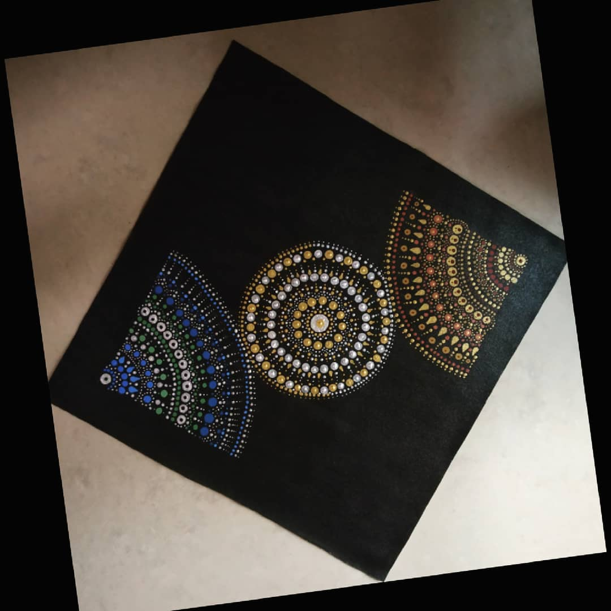

PATTERN MANDALA
The pattern dot mandala is a painting that has been done using two forms of colours.
This is made using warm and cool colours.
and the main motive behind this painting is to depict the good and bad part of life.
How both the things have a contrast in everyone’s life.
And it is also giving out a message like no life is perfect,
there is good times as well as bad times.
Materials Required :
1 Canvas (16*16) inch.
black , golden, silver, brown, teal light green, turquoise blue acrylic colour’s.
Mandala dot art tool set.
compass.
steps one can follow(if needed) :
First take a plain canvas and tape it if you want white border or else paint it full black.
After it dries , draw once small circle in the middle using compass and then two semi-circle touched to the line of middle circle.
After that start the dot art in a certain pattern that you want to do or you can take some hints from the painting above.
The one that i have made basically has cold colours used on one side and the other side all hot
colours and the middle mixture of cold and hot colour.
The cold colour depicting positive energy and the hot colours negative energy and the middle depicting the balance between them.
So, one can do any pattern dot mandala design using there own thought ,after all the circles are filled, your painting will be ready to be framed.